Quantitative Reasoning
1015SCG
Lecture 10
Communicating Numerical Data
There are three main ways we communicate numerical data:
- In-text statements
- Tables
- Figures and graphs
Communication is a cultural activity
Key points
Numbers, tables and figures are not the story: they support the story.
- Refer to them from your text.
Tables and graphs must have a clear purpose.
- Work out this purpose before making them.
Tables and graphs should clarify your story
- Design them to make the key point as clearly as possible
⭐Remember, it's the writer's responsibility to make the story clear...
Which form should I use?
|
Value added in London is over 60% above the national average; all other regions sit at or below the national average |
Which form should I use?
|
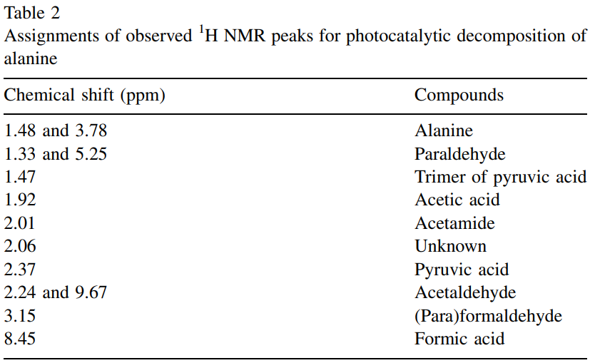 |
Which form should I use?
|
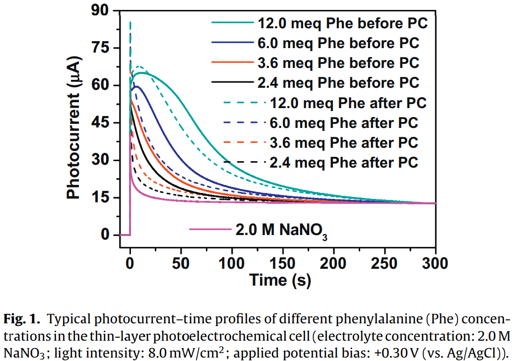 |
Which form should I use?
|
Value added in London is over 60% above the national average; all other regions sit at or below the national average |
|
|
|
When to use words; when to use digits
Generally, in scientific writing use digits:
- "24" rather than "twenty four"
The numbers 1 to 9 can be written as words, unless they are a measurement.
- "The experiment involved three trials conducted under identical conditions.""
- "The rod was 5 cm long and weighed 2 kg.""
Writing numbers using digits
- Use spaces or commas for thousands: $115\,457$ or $115,457$
- Separate numbers from units with a space: 6 ms (not "6ms").
- Do not pluralise unit abbreviations: 6 kg (not "6 kgs").
-
Keep units consistent when comparing values:
Compare 1 km and 200 m vs 1,000 m and 200 m -
Avoid emotive or imprecise language:
The concentration of methanol sky-rocketed as the temperature plummeted.
What to look for in a graph
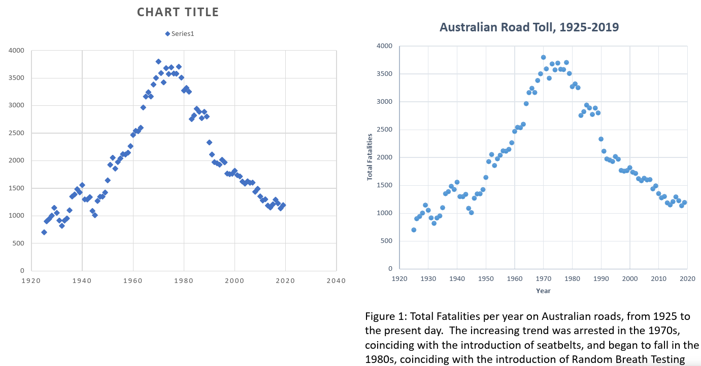
Tables and graphs should be self-contained
|
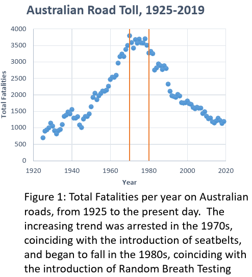 |
Referring to tables and graphs in text
- Tables and figures should support the narrative.
- Place them near their first reference.
- Number tables and figures clearly.
- Interpret the data; do not simply describe it.
|
The Australian Road Toll increases until 1970, then it
flattens out, before dropping since the early 1980s.
This is shown in the graph on the previous page.
|
In Figure 1, the variation of total fatalities per year on Australian roads is shown over the past century. The upward trend in fatalities from 1925 up to 1970 stalls around 1970, which is the year that legislation to make seatbelts compulsory begin to be enacted in Australian states. Furthermore a downward trend beginning in the 1980s is observed in the data, coinciding with a period when various other safety measures were introduced, such as random breath testing (RBT). |
Tables
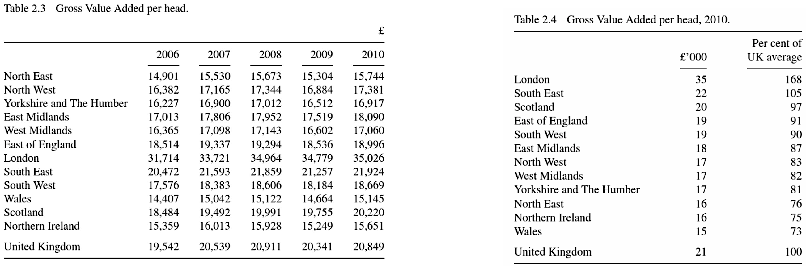
Tables
Reference tables:
|
Summary tables:
|
Tips for table design
- Have a clear purpose
- Put comparable data in the same column
- Sort data to support your message
- Use appropriate levels of significance
The importance of columns
| Table 2.5 Motor vehicles currently licensed in UK | Table 2.6 Motor vehicles currently licensed in UK. |
|
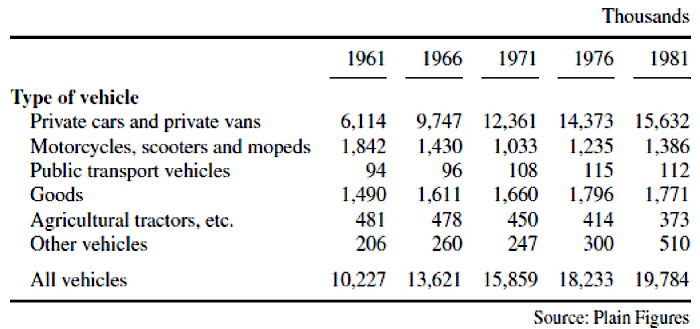 |
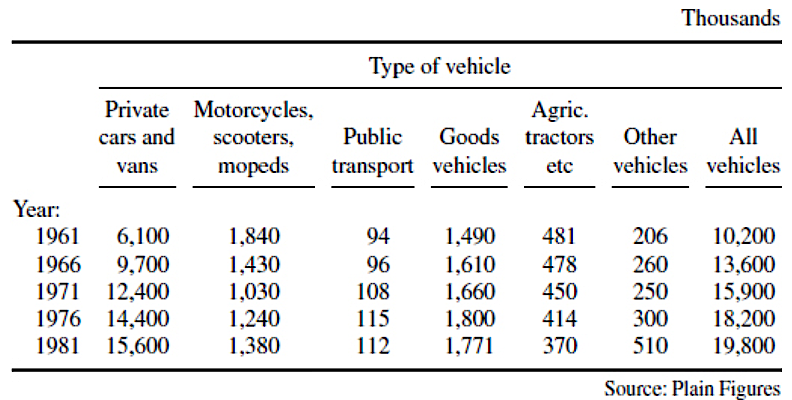 |
Separating data
| Table 2.9 Example of percentage data interfering in message. | Table 2.10 Distance of travel to work by car. |
|
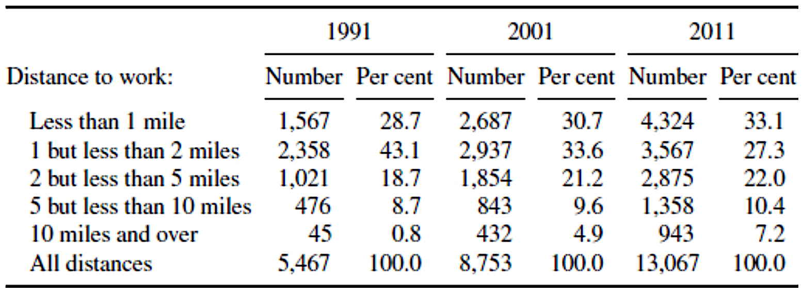 |
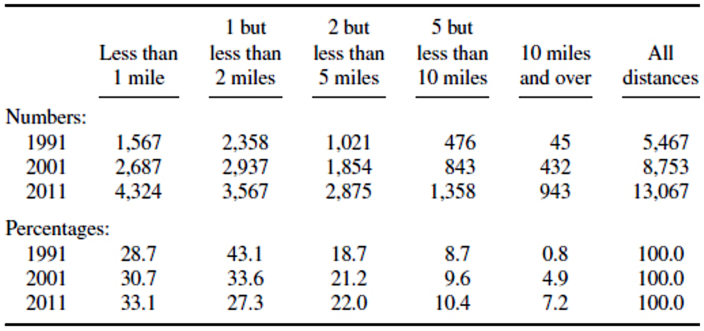 |
Visual principles
Visual principles
Research on visual perception guides effective graph design
- We compare positions better than angles or areas
- Dot plots are easier to interpret than pie charts
- Colour and volume are poor comparison tools
What can you tell me about these data sets?
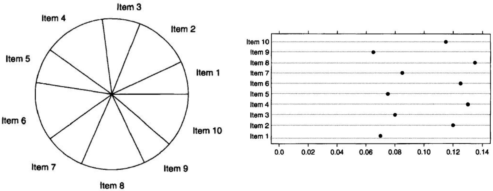
Humans struggle to compare angles: dot plots are interpreted much more easily.
Worse problems with 3D pie charts
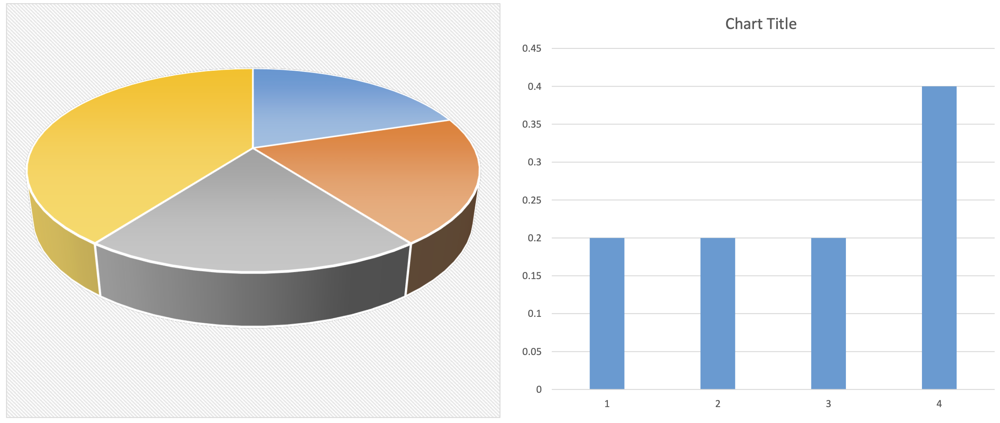
Humans struggle to compare angles in 3D perspective.
How does “Other OECD” data vary over time?
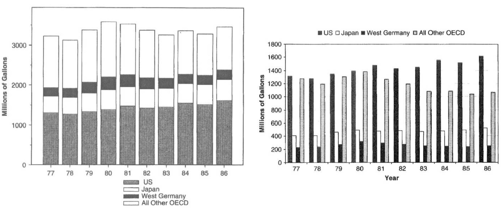
Comparing heights with different top and bottom values is very difficult.
Different strokes for different folks...
Lines must be distinguishable
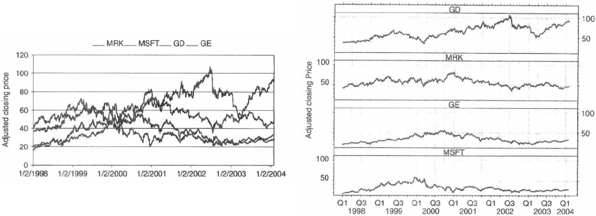
It is better to have separate plots.
Avoid deceptive double-axes
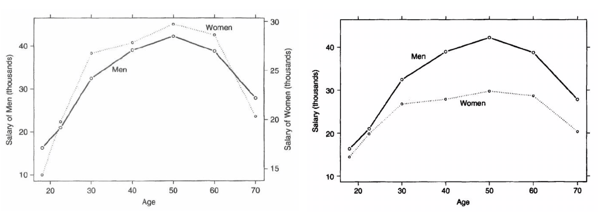
Use one single scale on the axes.
Is there anything we do well?
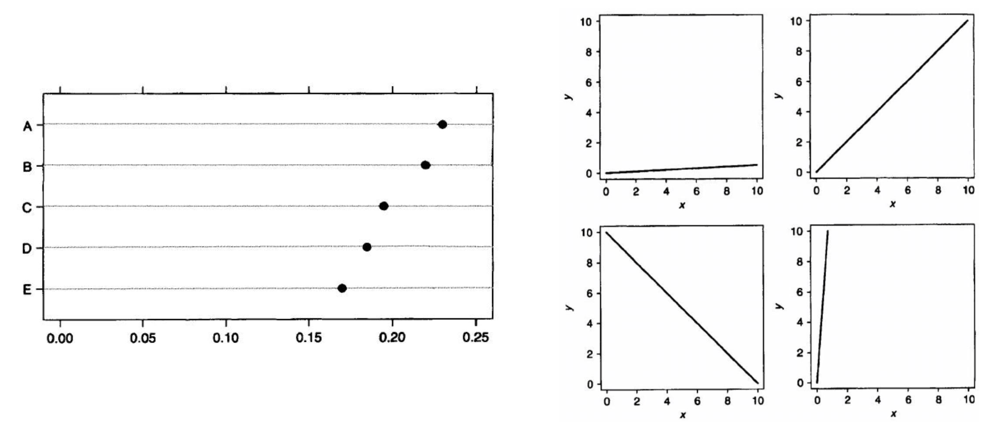
$\qquad \quad$ We judge positions along a common scale well. $\qquad \qquad $ We judge slopes well (relative to 45%)
What do we need to communicate?
|
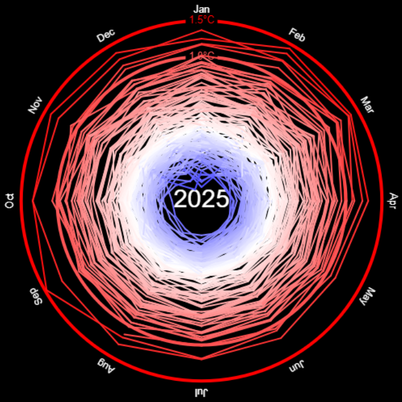 Polar plot |
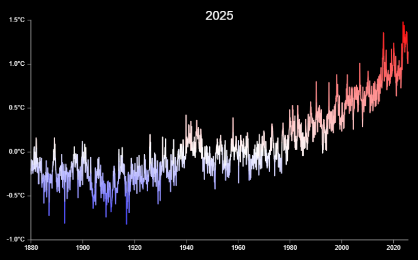 Cartesian plot |
Graphs: good practice
- Determine the aim of the chart first
- Reduce cognitive load
- Avoid unnecessary decoration
- Design to make comparisons clear
Converting tables to figures: what's the message?
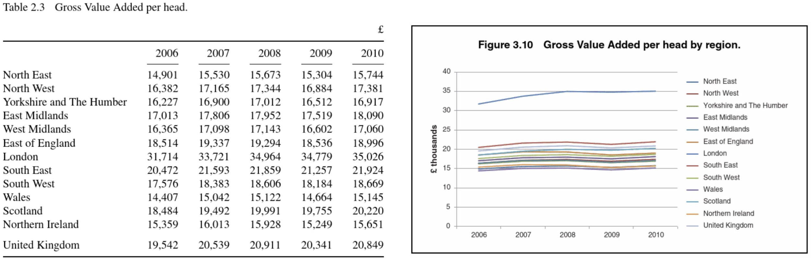
Converting tables to figures: what's the message?
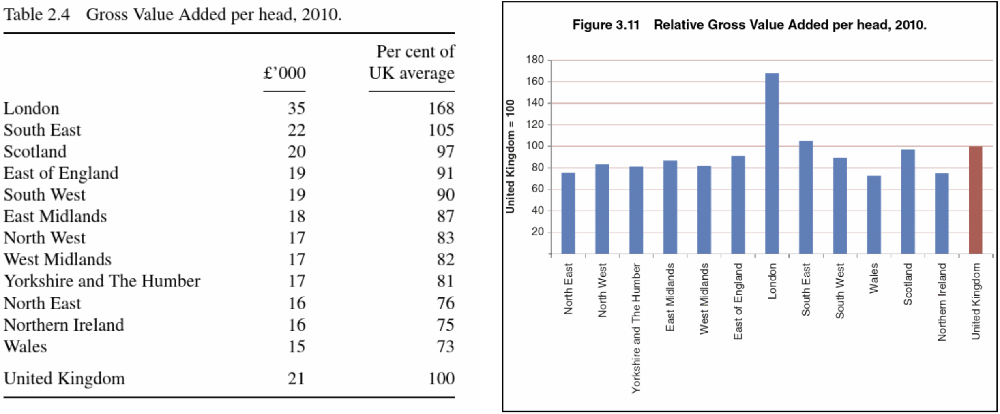
Converting tables to figures: what's the message?
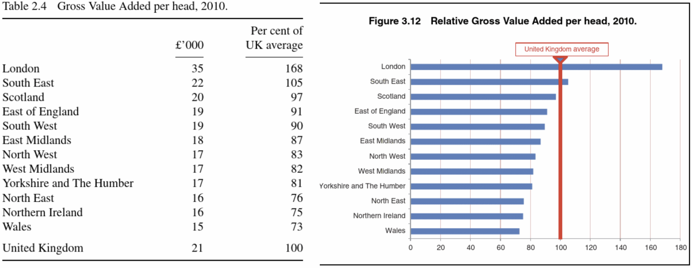
Horizontal bars tend to be more readable, easier to compare, and often a better use of space.
Summary
- Write to be accurate, brief, and clear.
- Numbers support the story.
- Make tables and graphs easy to interpret.
- Reference figures and tables clearly in the text.
References
|
Creating more effective graphs (2013) |
|
|
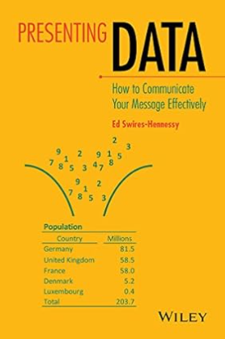 |
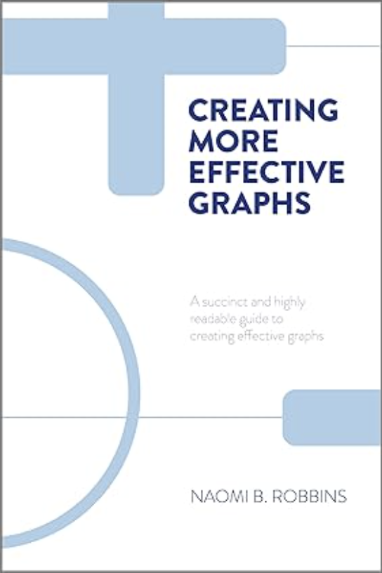 |
That's all for today!
See you in week 11!